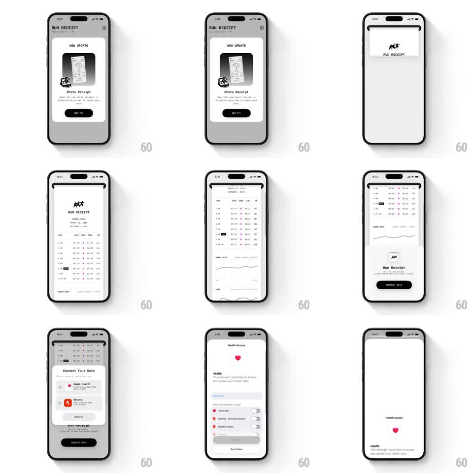

Media
Frame-by-frame

Rebuild this interaction 1:1: Run Receipt's onboarding - dismissing the update modal prints a long receipt that unrolls from the top of the screen (order details, split table, heart-rate graph), then a Connect Your Data sheet rises with Apple Health and Strava rows, leading into the Health Access permission flow.

Rebuild this interaction 1:1: Run Receipt's onboarding - dismissing the update modal prints a long receipt that unrolls from the top of the screen (order details, split table, heart-rate graph), then a Connect Your Data sheet rises with Apple Health and Strava rows, leading into the Health Access permission flow. ## Integration Integration: stack-agnostic spec - springs given as stiffness/damping, timed motions as duration + curve; map every value to your framework and animation library of choice. ## Scene Monochrome app. Opening: "NEW UPDATE" modal with a photo-receipt illustration and a GOT IT button. Main: a receipt styled like thermal paper - RUN RECEIPT header, order number/date lines, an itemized split table, and a heart-rate line graph. Then: "Connect Your Data" sheet with Apple Health and Strava rows and a Connect Data button, followed by a Health Access screen with data-type toggles. ## Motion spec Pattern: print-out receipt reveal chaining into a connect sheet. - GOT IT dismisses the modal (scale 0.95, fade, 200ms) and the receipt starts printing from the top edge - its height grows continuously (clip reveal, 1.4s, ease-out) like paper feeding from a slot, with a slight paper sway (+/- 1deg). - Receipt sections appear in print order: header, meta, table rows (rows tick in 40ms apart), then the heart-rate graph draws its line (600ms stroke animation). - The Connect Your Data sheet slides up over the receipt's bottom (translate 100% -> 0, 350ms, spring ~280/26); the receipt keeps scrolling subtly behind it. - Connect Data pushes to the Health Access screen (slide left, 300ms); toggles flip with the standard switch animation as the list rows fade in (150ms stagger). ## Calibration - The print metaphor is everything: one continuous reveal from the top, never a fade-in of a full receipt. - Table rows ticking in quickly is the "dot-matrix" texture - keep the rhythm audible-feeling. ## Reduced motion Receipt fades in fully formed (300ms); sheet and permission screens use plain fades. ## Don't miss - The receipt has serrated/curled paper edges - it is paper, not a card. - The heart-rate graph is part of the receipt, drawn last.